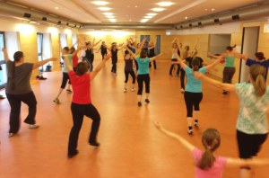

Die Gymnastikabteilung freut sich Kurse für Step-Aerobic und Wirbelsäulengymnastik anbieten zu können. Hier finden Sie unsere Angebote aus dem Gymnastik-Bereich, sowie Informationen zum sportlichen Konzept der Gymnastik-Abteilung.
Die Kurse finden immer donnerstags in der Kleinsendelbacher Mehrzweckhalle statt.
mit BBP-Bodenübungen (Bauch-Beine-Po). Durch dynamischen Bewegungsabläufen auf einer Stufe (= Step), werden die Gelenke geschont und gleichzeitig das Herz-Kreislaufsystem, Ausdauer und Muskelkraft sowie die Koordination trainiert. Die Bodenübungen ergänzen das Training und sprechen gezielt die Problemzonen an. So schmelzen ganz nebenbei auch überflüssige Pölsterchen dahin.
Do. 18:30 bis 19:30 Uhr
Zwickt es bei Ihnen im Rücken? Durch gezielte Übungen mobilisieren, dehnen und kräftigen wir die Rücken- und Bauchmuskulatur, um so Beschwerden vorzubeugen oder zu verringern. Dieser Kurs ist auch ein perfekter Ausgleich zum täglichen langen Sitzen im Büro.
Bitte bringen Sie zu den Kursen Sportschuhe und eine Gymnastikmatte mit.
Do. 19:30 bis 20:30 Uhr
Sie wollen in einen oder beide Kurse einfach mal für einige Stunden hineinschnuppern, ohne gleich Vereinsmitglied zu werden? Dafür bieten wir ab sofort die neue Zehnerkarte an. Sie gilt für 10 x 60 Minuten und kann für einen oder auch für die beiden Kurse direkt hintereinander verwendet werden. Sie kostet 29 Euro.
Außerdem können Sie bei Interesse gerne auf eine kostenlose Schnupperstunde vorbeikommen und mitmachen. Falls Sie noch Fragen zum Kursangebot haben kontaktieren Sie uns unter gymnastik@sv-kleinsendelbach.de.
Gymnastikabteilung des Sportverein Kleinsendelbach e. V.